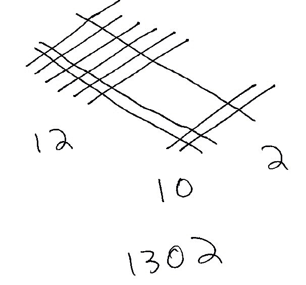
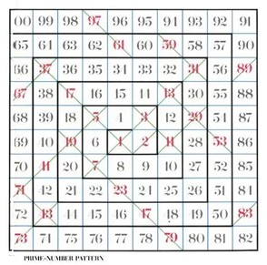

Don't interrupt, Bruno said as we came in. I'm counting the Pigs in the field!
How many are there? I enquired.
About a thousand and four, said Bruno.
You mean about a thousand, Sylvie corrected him. There's no good saying "and four": you can't be sure about the four!
And you're as wrong as ever! Bruno exclaimed triumphantly. It's just the four I can be sure about; cause they're here, grubbing under the window! It is the thousand I isn't pruffickly sure about
Arithmetics is the study of numbers, especially the properties of the traditional operations on them.
Some mathematicians are of the opinion that the doing of mathematics is closer to discovery than invention.
The number 210, a primorial, is the smallest number divisible by the smallest 4 primes (2, 3, 5, 7) and has 16 divisors (1, 2, 3, 5, 6, 7, 10, 14, 15, 21, 30, 35, 42, 70, 105, 210).
Greatest Common Divisor
A divisor of two positive integers that is the largest positive integer that divides both numbers without remainder. It is useful for reducing fractions to be in its lowest terms. You can find the GCD by performing repeated division starting from the two numbers we want to find the GCD of until we get a remainder of 0.
- 64 ÷ 40 = 1 with a remainder of 24
- 40 ÷ 24 = 1 with a remainder of 16
- 24 ÷ 16 = 1 with a remainder of 8
- 16 ÷ 8 = 2 with a remainder of 0.
We stop here since we've already got a remainder of 0. The last number we used to divide is 8 so the GCD of 40 and 64 is 8.
Least Common Multiple
A multiple of two integers that is the smallest integer that is a multiple of both numbers. For two positive integers, the properties of their GCD and LCM come in pairs; the phenomenon is explained by the formula gcd(a, b) × lcm(a, b) = a × b.
Numbers categorized by base.
Number bases are mathematical systems that use a specific set of digits and rules to represent numbers.
| Base-4, mul | |||
|---|---|---|---|
| × | 1 | 2 | 3 |
| 1 | 1 | 2 | 3 |
| 2 | 2 | 10 | 12 |
| 3 | 3 | 12 | 21 |
A prime number cannot be divided by any other number, apart from itself and one.
To find the prime factorization of a number, start by dividing the number by the first prime number 2 and continue dividing by 2 until you get a decimal or remainder. Then divide by 3, 5, 7, etc. until the only numbers left are prime numbers.
| Number | Primes | ||
|---|---|---|---|
| 2 | 3 | 5 | |
| 6 | 1 | 1 | 0 |
| 375 | 0 | 1 | 3 |
| 2250 | 1 | 2 | 3 |
Multiplying two numbers is the same as adding the counts of each prime
factors, and division is the same as subtracting the counts. For example, using
numbers made up of the 3 first primes(2, 3, 5), 2250 is equal to 2^1 x
3^2 x 5^3.
Using prime factorization, one can find the GCD and LCM of two numbers.
- 48 = 2 × 2 × 2 × 2 × 3
- 180 = 2 × 2 × 3 × 3 × 5
- Least common multiple = 2 × 2 × 2 × 2 × 3 × 3 × 5 = 720
- Greatest common divisor = 2 × 2 × 3 = 12
- Product = 720 × 12 = 8640
An interesting part of primes is the ability to encode data, values can be encoded as exponents to a number's prime factors, or as values to registers as in Fractran. For example, the letters of the word "HELLO" can be stored as ascii exponents to the first five primes:
| H | E | L | L | O |
| 2^72 | 3^69 | 5^76 | 7^76 | 11^79 |
The resulting number storing the values of each character of "HELLO":
1639531486723067852359816964623169016543137549 4122401687192804219102815235735638642399170444 5066082282398711507312101674742952521828622795 1778467808618104090241918575825850806280956250 0000000000000000000000000000000000000000000000 0000000000000000000000000
Extra letters can be appended by multiplying with a number reducible with the
following prime, for example * 13^33 would make our message
"HELLO!". Letters can also be removed by dividing by one of its factors, for
example / 3^69 would make our message "HLLO!".
A fraction represents a part of a whole.
A fraction consists of a numerator displayed above a line, and a denominator below.
- An proper fraction must be less than 1, like
3/4and7/12. - An improper fraction is more than 1, like
9/2and13/4. - A mixed fraction is a whole number and a portion less than 1 together, like
2 3/4. - A reciprocal is another fraction with the numerator and denominator exchanged, like
3/7for7/3.
An interesting aspect of fractions and prime factorization is that multiplying fractions is the same as adding the prime numerators and subtracting the prime denominators.
| Multiplication | ||
|---|---|---|
| 42 | 5 / 14 | 15 |
| 21 x 31 x 71 / 1 | 5+1 / 2-1 x 7-1 | 31 x 51 / 1 |
For example, multiplying 42 by 5/14 means incrementing the power of prime 5, and decrementing the power of primes 2 and 7 — For a result of 42. A division is simply the inversion of the effects of the numerator and denumerator.
| Division | ||
|---|---|---|
| 15 | 5 / 14 | 42 |
| 31 x 51 / 1 | 5-1 / 2+1 x 7+1 | 21 x 31 x 71 / 1 |
Addition/Subtraction
To add fractions containing unlike quantities , it is necessary to convert all amounts to like quantities.
1/4 + 1/3 1*3/4*3 + 1*4/3*4 3/12 + 4/12 = 7/12
The process for subtracting fractions is, in essence, the same as that of adding them: find a common denominator, and change each fraction to an equivalent fraction with the chosen common denominator.
Multiplication
To multiply fractions, multiply the numerators and multiply the denominators.
2/3 * 3/4 = 6/12
This particularity serves as the basis for the Fractran programming language, it is also of interest for reversible computation.
Reducing
Dividing the numerator and denominator of a fraction by the same non-zero number yields an equivalent fraction: if the numerator and the denominator of a fraction are both divisible by a number (called a factor) greater than 1, then the fraction can be reduced to an equivalent fraction with a smaller numerator and a smaller denominator.
Recursive Method
function gcd(a, b) if b = 0 return a else return gcd(b, a mod b)
Comparing
Comparing fractions with the same positive denominator yields the same result as comparing the numerators.
The line that separates the numerator and the denominator is called a vinculum, which is also the word used to describe ‘a connecting band of tissue, such as that attaching a flexor tendon to the bone of a finger or toe’.
In Postfix Notation, the operators follow their operands.
In Postfix calculators, no equals key is required to force computation to occur. To learn more about a programming language using Postfix at its core, see Forth.
Brackets and parentheses are unnecessary: the user merely performs calculations in the order that is required, letting the automatic stack store intermediate results on the fly for later use. Likewise, there is no requirement for the precedence rules required in infix notation.
| prefix notation | infix notation | postfix notation |
|---|---|---|
+ 1 * 2 3 |
1 + (2 * 3) |
1 2 3 * + |
For instance, one would write 3 4 + rather than 3 + 4. If there are multiple operations, operators are given immediately after their second operands. The expression written (5 + 10) * 3 in conventional notation would be written 10 5 + 3 * in reverse Polish notation.
| operation | 3 | 10 | 5 | + | * |
|---|---|---|---|---|---|
| stack | 3 | 10 | 5 | 15 | 45 |
| 3 | 10 | 3 | |||
| 3 |
The automatic stack permits the automatic storage of intermediate results for use later: this key feature is what permits Postfix calculators to easily evaluate expressions of arbitrary complexity: they do not have limits on the complexity of expression they can evaluate.
a = x - ywhere-means subtraction, a dyadic use of the symbola = -ywhere-means negative, a monadic use of the same symbol
Lunar Arithmetic is a variance of arithmetic without carry.
In Lunar Arithmetic, the addition is defined as the max() of
digits in an arbitrary base(in this case decimal), for example: 4 + 5 = 5.
+ 153 426 --- 456
Multiplication is defined as the min() of digits, for example: 6
+ 7 = 6.
× 153 426 --- 153 122 143 ----- 14253
Even Numbers(2 × n)
0, 1, 2, 10, 11, 12, 20, 21, 22, 100, 101, 102, 120 ..
Squre Numbers(n × n)
0, 1, 2, 3, 4, 5, 6, 7, 8, 9, 100, 111, 112, 113, 114 ..
Prime Numbers
In the usual arithmetic, a prime number is defined as a number whose only possible factorisation is 1 × n. Analogously, in the lunar arithmetic, a prime number is defined as a number whose only factorisation is 9 × n where 9 is the multiplicative identity which corresponds to 1 in usual arithmetic.
19, 29, 39, 49, 59, 69, 79, 89, 90, 91, 92, 93, 94, 95 ..